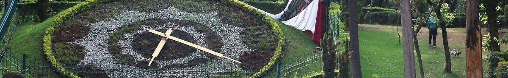
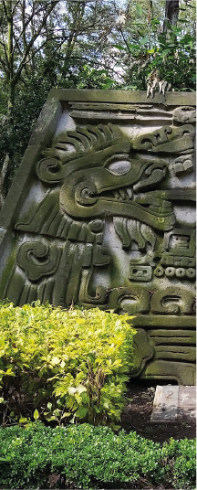
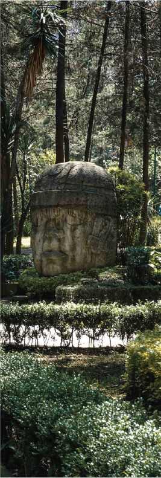

PARQUE HUNDIDO

El Parque Hundido, cuyo nombre oficial es Parque Luis Gonzaga Urbina, es uno de los parques más emblemáticos y tradicionales de la Ciudad de México. Se encuentra en la alcaldía Benito Juárez, sobre Avenida Insurgentes Sur, y es famoso por su diseño “hundido”, su reloj floral y sus senderos rodeados de vegetación.
La historia del parque se remonta al siglo XIX, cuando el terreno era ocupado por la Compañía Ladrillera de la Nochebuena. En esa zona se extraía arcilla para fabricar ladrillos, lo que provocó grandes excavaciones en el terreno. Cuando la ladrillera abandonó el lugar, quedó una enorme depresión natural; de ahí nació el nombre de “Parque Hundido”.
Posteriormente se sembraron árboles y el sitio comenzó a conocerse como el Bosque de la Nochebuena. En la década de 1930, tras la expansión y pavimentación de Avenida Insurgentes, el gobierno decidió transformar el área en un parque público con jardines, fuentes y andadores.
El Parque Hundido es importante arquitectónicamente porque combina:
- diseño paisajístico,
- urbanismo moderno del siglo XX,
- y elementos culturales prehispánicos.
Su estructura aprovecha el desnivel natural generado por las excavaciones de la antigua ladrillera, creando caminos descendentes y terrazas verdes poco comunes en la CDMX.
Entre sus elementos arquitectónicos y urbanos más importantes destacan:
🌺 Reloj floral
Es uno de los símbolos del parque y considerado el reloj floral más grande de México. Fue construido por una casa relojera poblana y se encuentra al centro de una gran escalinata rodeada de jardines.
🗿 Museo arqueológico al aire libre
En 1972 se colocaron reproducciones de esculturas y piezas prehispánicas de culturas:
- maya,
- olmeca,
- zapoteca,
- huasteca,
- totonaca,
- y del altiplano central.
Estas piezas están distribuidas a lo largo de senderos temáticos marcados con colores
🎵 Audiorama
Uno de los espacios más característicos del parque. Es un pequeño foro rodeado de vegetación diseñado para escuchar:
- música clásica,
- poesía,
- cine,
- y actividades culturales.
🌳 Diseño urbano
El parque conserva:
- andadores curvos,
- áreas arboladas densas,
- fuentes,
- plazas,
- y zonas de descanso.
Todo esto ayuda a aislar visual y acústicamente el parque del tráfico de Insurgentes, creando una sensación de tranquilidad en medio de la ciudad.

